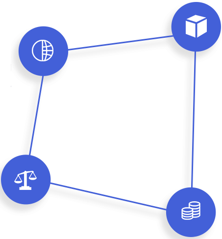
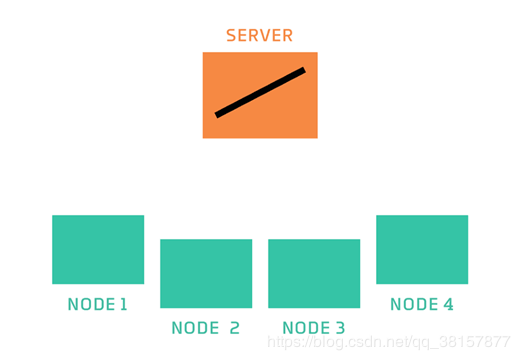

产 品 使 用
利用联邦迁移学习在金融风控领域的优势，打破数据孤岛、建立数据生态、保障数据安全。利用联邦迁移技术，在实现数据隔离的前提下，通过多方数据联合增加评估维度，丰富科技初创企业的画像和特征，同时增强模型的个性化与适应性，建立自动、智能的风投评估框架，为风投机构提供精细化的风险评估报告，促进金融对实体经济的支持。
产 品 使 用
特 点 & 优 势

-
一.安全合规
依照GDRP规范
满足安全合规
数据不再泄露
保证隐私安全
-
二.联合扩展
多方联合建模
打破数据壁垒
连接多方数据
建立数据生态
-
三.提升赋能
推动合作联盟
智能自动评估
多维评价体系
赋能企业AI
解 决 方 案
联邦学习建模 迁移学习赋能
深度学习
深层网络挖掘数据特征
深层语义助力文本理解
深度迁移赋能模型效益
深度学习增强特征泛化

联邦学习
联邦学习
模型联邦打破数据屏障
数据联邦解决安全隐患
边缘计算节约算力成本
智能框架
风险投资理论技术支撑
全面多层次评估指标体系
高覆盖流程化信息聚合
低成本快捷化辅助平台